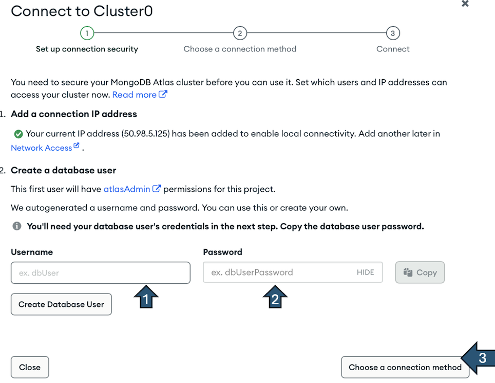
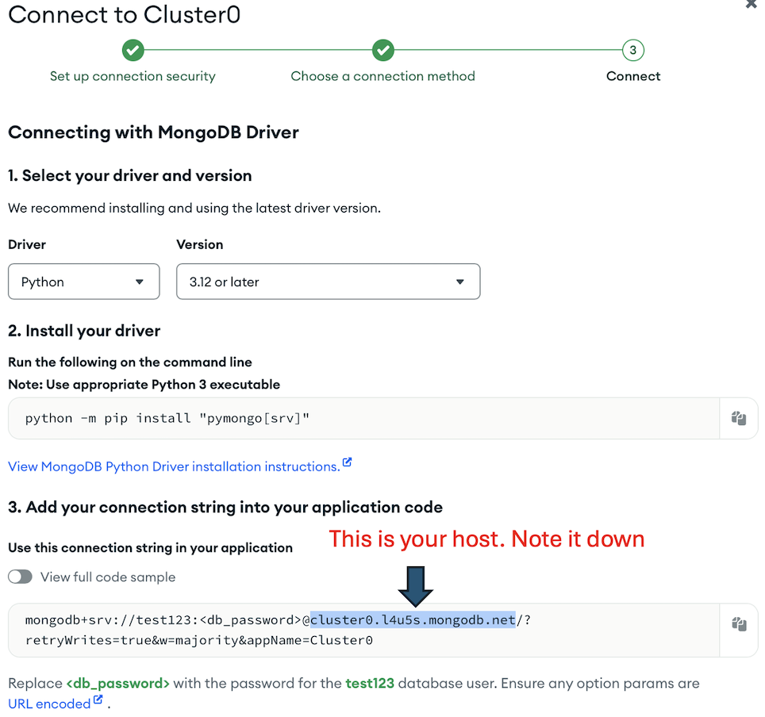

Worksheet 6: Introduction to noSQL databases and document model with MongoDB#
Exercise 1: Recap concepts in non-relational database#
{rubric: accuracy = 5}
What is a key difference between relational and non-relational databases?
A) Relational databases use a flexible schema, while non-relational databases use a fixed schema.
B) Relational databases use SQL for queries, while non-relational databases use various query languages.
C) Non-relational databases are always faster than relational databases.
D) Relational databases do not support ACID properties, while non-relational databases do.
YOUR ANSWER HERE
Which of the following is a disadvantage of using a relational database?
A) They are not suitable for complex queries.
B) They require a fixed schema.
C) They do not support transactions.
D) They cannot handle large volumes of data.
YOUR ANSWER HERE
Which type of non-relational database is best suited for hierarchical & networked data storage?
A) Column-based
B) Key-value
C) Graph
D) Document
YOUR ANSWER HERE
What is a common use case for a key-value non-relational database?
A) Storing large binary files
B) Real-time analytics
C) Storing user session information
D) Complex joins and transactions
YOUR ANSWER HERE
Which of the following statements about the scalability of relational and non-relational databases is true?
A) Relational databases are generally easier to scale horizontally than non-relational databases.
B) Non-relational databases are typically designed to scale horizontally more easily than relational databases.
C) Both relational and non-relational databases scale horizontally with equal ease.
D) Neither relational nor non-relational databases can scale horizontally.
YOUR ANSWER HERE
Exercise 2: Create a cluster on mongoDB Atlas#
We will try to import pymongo (to connect to mongoDB).
import pymongo
print(pymongo.__version__)
If this doesn’t work, you should install pymongo in your conda environment by typing !pip install pymongo in a new code cell
In this exercise, we will create a free cluster on mongoDB Atlas and load sample datasets.
2.1 Set up your MongoDB Atlas cluster#
{rubric: completion = 5}
Please follow the steps below to create your free cluster on MongoDB Atlas:
Navigate to https://www.mongodb.com/cloud/atlas/register and sign up a free account with your email
Open your email and verify the account
Log in to your MongoDB account and create a free cluster, make sure to have the following configurations:
Check the M0 tier
Uncheck the ‘Preload sample dataset’ option
Click
Create DeploymentIt’s going to pop up a screen to Connect to Cluster():
Now you will need to add the first user to this database, choose an
usernameandpasswordthat you can easily remember.Click choose a connection method 
Choose Drivers
Note down your host information. It should look something like
cluster0.xxxx.mongodb.net
Now open your
credientials.jsonfile in worksheet6 repo and fill in the username, password, and host information. Save the file.Once the cluster has been created:
Click
Databaseon the left tabClick the triple dot
... buttonSelect
Load Sample Dataset
2.2#
{rubric: accuracy = 5}
After loading the data, open the sample_restaurant database and answer the following questions:
How many collections are present in the
sample_restaurantdatabase?List the number of documents and the storage size of each collection in the
sample_restaurantdatabase
Hints: You can read more about the documentation of sample_restaurant database here https://www.mongodb.com/docs/atlas/sample-data/sample-restaurants/
2.3#
{rubric: accuracy = 5}
Open the restaurants collection. Filter for this ObjectId
{_id: ObjectId(‘5eb3d668b31de5d588f4292c’)}
Answer following questions:
What are the coordinates of that restaurant?
Which borough does this restaurant locate in?
How many reviews did this restaurant get?
What is the lowest rating score?
What is the highest rating score?
Exercise 3: Connect to your mongoDB using pymongo#
What you need:
The host URL of your mongoDB connection (should look something like
cluster0.lqirl.mongodb.net)Your mongoDB username
Your mongoDB password
Modify the credentials.json file with appropriate information above.
Below is the starter code to connect to your MongoDB database, provided that you have a credentials.json file with the correct information.
from pymongo import MongoClient # import mongo client to connect
import json # import json to load credentials
import urllib.parse
# load credentials from json file
with open('credentials.json') as f:
login = json.load(f)
# assign credentials to variables
username = login['username']
password = urllib.parse.quote(login['password'])
host = login['host']
url = "mongodb+srv://{}:{}@{}/?retryWrites=true&w=majority".format(username, password, host)
# connect to the database
client = MongoClient(url)
3.1#
{rubric: accuracy = 5}
Write code to list all databases in the client server
Hint: See the lecture 12 for example
# list all databases
3.2#
{rubric: accuracy = 5}
Write code to list all collections in the sample_restaurants database
Hint: See the lecture 12 for example
# list all collections in the sample_restaurants database
3.3#
{rubric: accuracy = 5}
Display the first document in the restaurants collection in the sample_restaurants database
Hint: See the lecture 12 for example
# show the first document
Submission instructions#
{rubric: mechanics = 5}
Make sure the notebook can run from top to bottom without any error. Restart the kernel and run all cells.
Commit and push your notebook to the github repo
Double check your notebook is rendered properly on Github and you can see all the outputs clearly